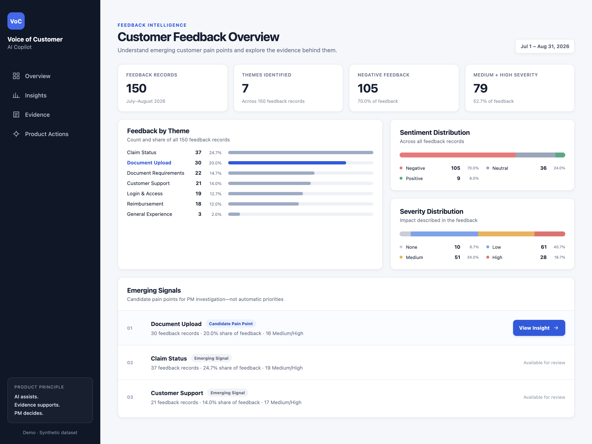
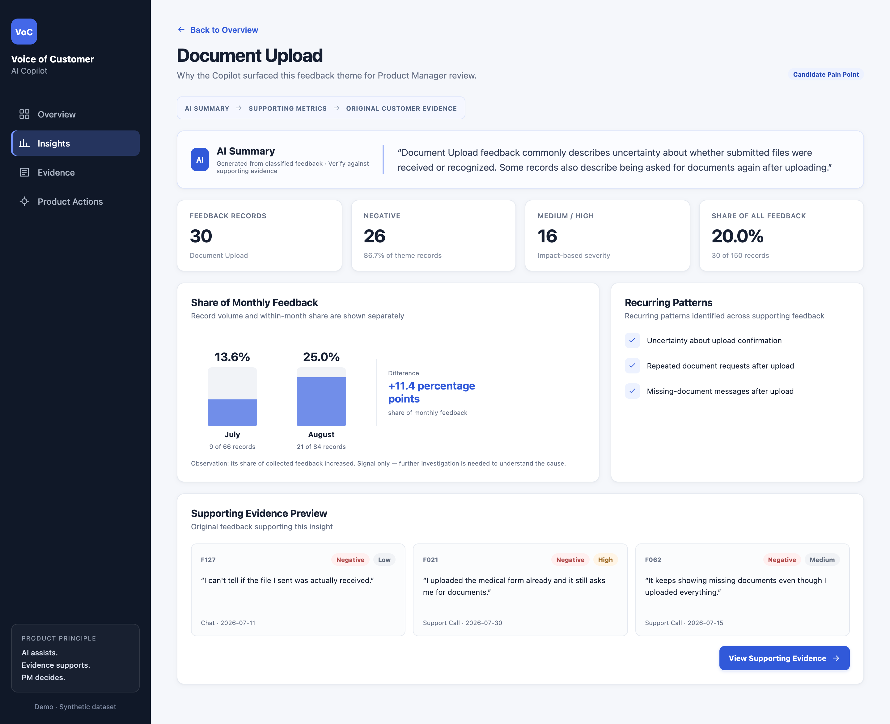
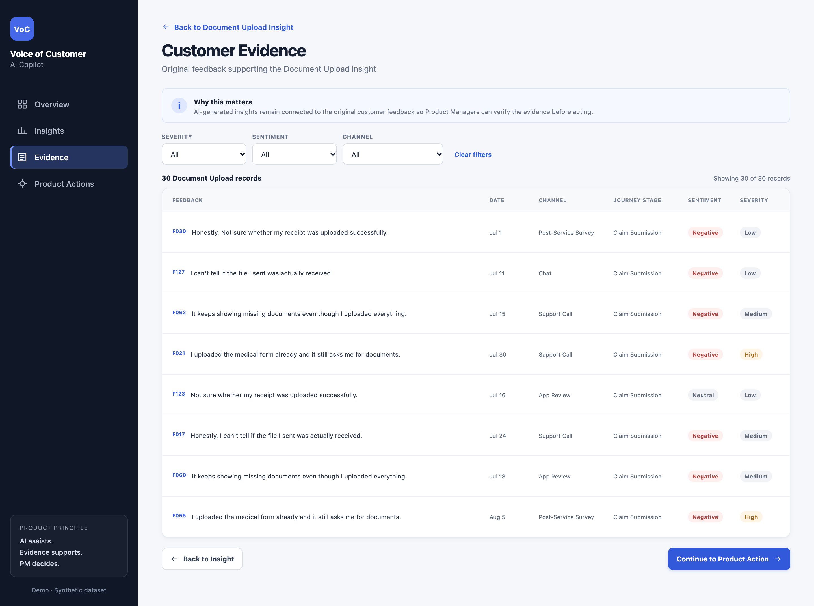

Voice of Customer
AI Copilot
Product Managers get feedback as messy free text. I built a tool that sorts 150 customer comments with AI, then tested how far the AI could be trusted before deciding what it's allowed to do.
The result: AI groups the feedback, the evidence stays one click away, and the PM makes the decision.

Try the live demo

Define
User: Product Manager. Job: find recurring friction without losing the evidence.
Experiment
Three prompt versions tested on a 40-record development set. V1 won on overall exact match.
Lock & test
24 records hash-locked before choosing a model, then tested once.
Decide
Severity over-predicts impact (7 of 10 "no issue" → "low"). So it's a review signal, never a priority driver.
One project,
three lenses
Product
User, problem, job-to-be-done, and a clear decision on what the AI is allowed to do.
Project
Phased plan, locked test data, documented decisions. Led instructor teams and ran full courses in the IDF.
Data
Python, SQL, Excel. Built the evaluation, confusion matrix and error analysis myself.
Experience
B.Sc. Industrial Eng. & MgmtAfeka College
SQL, Python (OOP), statistics, operations research, process analysis and modeling, information systems.
Social Media ManagerThe Cooking Studio
Ran the brand's channels and analyzed engagement metrics to improve results.
Customer ServiceHarel Insurance
Health-insurance cases across information systems and multiple stakeholders.
C2 Instructor & Course CommanderIDF Home Front Command
Led a team of instructors, planned training programs and certification, and commanded a full instructor course.